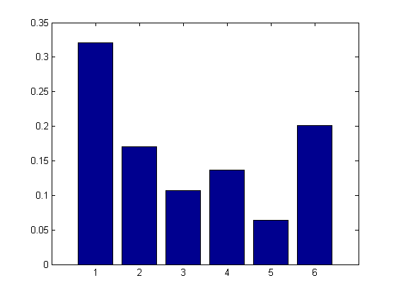
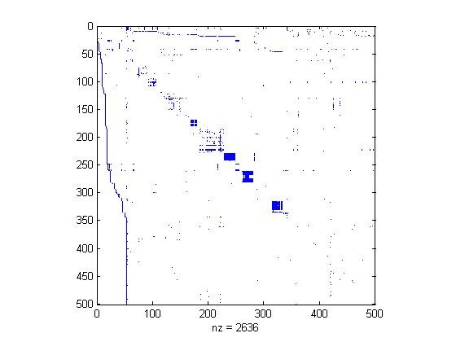
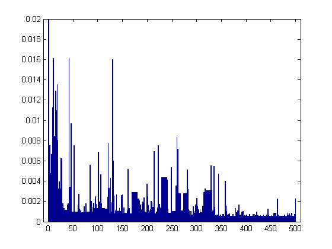

Contents
6 node web example
i = [ 2 6 3 4 4 5 6 1 1];
j = [ 1 1 2 2 3 3 3 4 6];
n = 6;
G = sparse(i,j,1,n,n);
c = sum(G,1);
k = find(c~=0);
D = sparse(k,k,1./c(k),n,n);
e = ones(n,1);
I = speye(n,n);
p = 0.85;
pi = normalize((I - p*G*D)\e);
fprintf('exact pi\n'); disp(pi(:)')
figure; bar(pi);printPmtkFigure('smallwebPagerank');
fprintf('pi over time using power method\n');
format compact
pi = e/n;
z = ((1-p)*(c~=0) + (c==0))/n;
A = p*G*D + e*z;
for i=1:10
pi = normalize(A*pi);
disp(pi')
end
[pi,cnt] = pagerankpow(G);
fprintf('matrix free power method\n'); disp(pi(:)')
exact pi
0.3210 0.1705 0.1066 0.1368 0.0643 0.2007
pi over time using power method
0.3319 0.1194 0.1194 0.1667 0.0958 0.1667
0.3219 0.1797 0.0893 0.1232 0.0724 0.2135
0.3214 0.1721 0.1116 0.1369 0.0606 0.1974
0.3177 0.1702 0.1067 0.1383 0.0652 0.2018
0.3234 0.1693 0.1066 0.1368 0.0645 0.1995
0.3200 0.1716 0.1061 0.1363 0.0643 0.2018
0.3214 0.1701 0.1070 0.1371 0.0642 0.2002
0.3208 0.1707 0.1064 0.1367 0.0644 0.2010
0.3212 0.1704 0.1067 0.1368 0.0643 0.2006
0.3209 0.1706 0.1065 0.1368 0.0643 0.2008
matrix free power method
0.3210 0.1706 0.1066 0.1368 0.0643 0.2008

Now run it on the Harvard web site
load harvard500
figure;spy(G);
printPmtkFigure('harvard500spy');
tic
[pi,cnt] = pagerankpow(G);
toc
figure;bar(pi);set(gca,'xlim',[-10 510]);set(gca,'ylim',[0 0.02])
printPmtkFigure('harvard500pagerank');
[pi,ndx] = sort(pi, 'descend');
celldisp(U(ndx(1:3)))
Elapsed time is 0.036967 seconds.
ans{1} =
http://www.harvard.edu
ans{2} =
http://www.hbs.edu
ans{3} =
http://search.harvard.edu:8765/custom/query.html
 